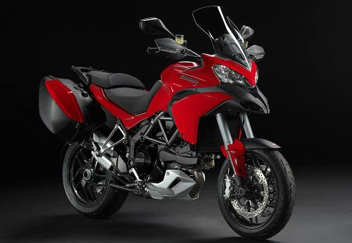

New Ducati Hypermotard 939 Langsing dan Menggiurkan
Nov 7, 2017Sama sepeti Ducati Hypemotoard, motor ini juga berjenis supermoto yang mampu diajak berlari disegala medan dan segal kondis jalan, namun harganya jauh lebih mahal, dengan harga termurah sebesar 535 Jutaan untuk tipe Ducati Multisatrda 1200 ABS. Sedangkan harga motor Ducati Multistrada termahal dibanderol dengan harga 680 Jutaan untuk tipe Ducati Multistrada 1200 Pikes Pike.
Sangat pantas Ducati Multistrada 1200 Pikes Pike memiliki harga sangat mahal karena di dalamnya menggunakan mesin berkapasitas 1198.4cc dan dilengkapi mesin L-Twin silinder, dengan 4 valve per silinder dan memiliki pendingin cair untuk mengimbangi kekuatan mesinnya. Ducati juga melengkapinya dengan sistem bahan bakar injeksi yang menyempurnakan pembakaran mesin.